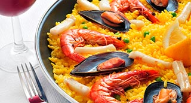

Paella Parellada (“del señorito) o la forma de comer una paella sin pelar...
Arroz, Pescado, Marisco

| Arroz bomba | 40 gr. |
| Gambas o langostinos | 125 gr. |
| Cigalas | 125 gr. |
| Calamares o sepia | 200 gr. |
| Almejas | 200 gr. |
| Mejillones | 250 gr. |
| Sofrito * | 200 gr. |
| Pimiento verde | 1 un. |
| Ajo | 1 dt. |
| Pimentón | 1 c.m. |
| Aceite de oliva | 30 ml. |
| Caldo de Pescado | 800 ml. |
-
Paella Parellada
- Pelar las gambas y las cigalas. Cortar a trozos. Reservar las cáscaras para el caldo de pescado.
- Cortar a dados la sepia o los calamares.
- Limpiar los mejillones colocarlos en un cazo ponerlos al fuego hasta que se abran. Separar la carne y filtrar el agua de cocción.
- Colocar las almejas con agua con un poco de sal para depurarlas y sacar posible arena.
- Cortar el pimiento verde en dados pequeños.
- Encender el horno a 220º.
- Picar el ajo finamente colocarlo en la paellera con un poco de aceite y ponerlo al fuego.
- Cuando empiece a chisporrotear añadir el arroz y nacararlo durante un par de minutos.
- Añadir el pimentón y dar un par de vueltas.
- Añadir el sofrito y mezclar bien.
- Agregar gambas, cigalas, sepia, mejillones y pimiento verde. Remover todo el conjunto 1 min.
- Añadir el caldo de pescado y las almejas. Llevar a ebullición y rectificar de sal si fuera necesario.
- Seguir cociendo a fuego medio durante unos 6 min.
- Introducirla en el horno y dejarla cocer hasta que haya consumido todo el líquido. Aproximadamente entre 6 y 8 min. Acabado/Sugerencia
- Sofrito * Ver recetas base
- Retírar del horno, dejar reposar un par de minutos y servir.